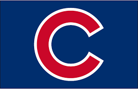

 The Chicago Cubs are a major league baseball team that are located in Chicago, Illinois. The Cubs are my favorite team, because I have an aunt who lives in Chicago. Wrigley Field is a legendary baseball field, and I have had the opportunity to attend a game there.
The Cubs are a very famous baseball team. They are very well known for having one of the most iconoic fields in baseball history. Wrigley Field was built in 1914. It is very well known for famous ivy Walls. The Cubs are in the National League Central. They orginated in 1903. The Cubs have won three World Series Titles. 1907 and 1908, and their most recent in 2016. They have won 17 National League Pennants and 5 Central Division Titles.